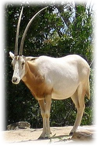

Oryx is a kind of antelope that is a herbivore . It has a white face and black striped on its body
The habitat is the Arabian Desert, the Sahara Desert in Africa and Israel, which have developed into eating a lot of plants and drinking less water to adapt in the desert.
Currently, the Arab League is protecting Oryx from extinction because the population of Oryx is decreasing.